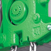
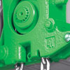

 
Talha elétrica de corrente Standard
A linha Standard das talhas elétricas de corrente ST é composta por quatro diferentes tipos de montagem:
Talha fixa, suspensa por olhal (ou gancho)
Talha elétrica de corrente equipada com trole manual
Talha equipada com trole motorizado de altura normal
Talha equipada com trole motorizado de baixa altura
Produtos STAHL:
- Talha elétrica de corrente
- Talhas elétricas de cabo de aço
- Ponte rolante apoiada univiga
- Ponte rolante apoiada dupla-viga
- Pontes rolantes suspensas
- Guindaste giratório
- Monovias
- Blocos de rodas
- Kit de componentes
Peças sobressalentes; manutenção preventiva e corretiva
Consultoria especializada em transporte e movimentação de carga e fornecimento de componentes para outros fabricantes.
Todos os equipamentos podem ser fornecidos na versão á prova de explosão.